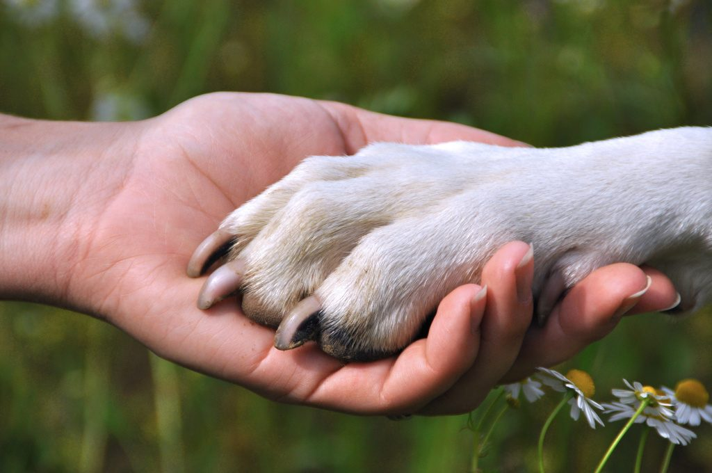

Um pouco sobre nós
Bem-vindos ao projeto "Cão de Rua". Desde 2019, estamos comprometidos em transformar a realidade dos animais de rua no município de Boca do Acre. Somos uma organização independente e dedicada a oferecer ajuda e esperança aos animais menos privilegiados. Nosso objetivo é claro: proporcionar um ambiente seguro, digno e amoroso para os animais que enfrentam as adversidades das ruas. Através do trabalho incansável de nossa equipe e de voluntários dedicados, buscamos garantir que esses seres indefesos recebam abrigo, cuidados médicos e, acima de tudo, a chance de encontrar um lar amoroso. Atuamos de forma independente, movidos pela paixão e compaixão por aqueles que não têm voz. Conscientes dos desafios enfrentados, dedicamos nossos recursos e esforços para criar um impacto positivo e duradouro na vida desses animais. Acreditamos que cada vida importa, e é por isso que trabalhamos incansavelmente para resgatar, reabilitar e encontrar lares para os animais abandonados. Sabemos que cada adoção bem-sucedida é um triunfo para nós e para o animal que encontrou uma nova chance. Contamos com a generosidade da comunidade e com o apoio de pessoas que compartilham de nossa missão. Junte-se a nós nessa jornada em prol dos animais de rua. Juntos, podemos fazer a diferença e dar a eles a vida que merecem.
O projeto Cão de Rua é movida pelo amor e pela compaixão, e nosso compromisso com os animais de rua de Boca do Acre é inabalável. Junte-se a nós nessa luta pela proteção e bem-estar desses seres tão especiais. Sua contribuição e apoio fazem a diferença em suas vidas.